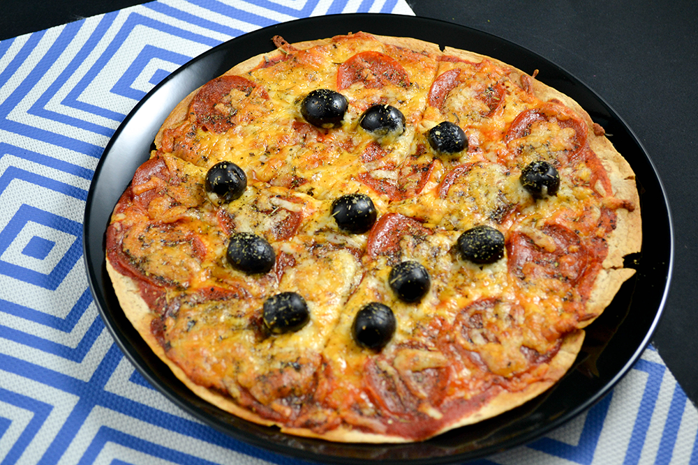

Keto Pizza

Description
This keto-friendly pizza is sure to be a hit! It's crust is a simple low-carb tortilla topped with pepperoni,
mozzarella and any other low-carb toppings you like.
Ingredients
- 1 Tortilla Factory Tortilla
- 19 Slices Mike's Pepperoni
- 1 Tbsp Walden Farms Tomato Sauce
- 1 Cup Shredded Mozzarella
- Olives, Sausage, Smoked Meat... (to your taste)
Steps
- Spread the tomato sauce on the tortilla.
- Spread the 19 slices of pepperoni evenly over the crust.
- Spread the mozzarella evenly across the crust.
- Add any other toppings you may like
- Bake in the over at 400 for 12 minutes or until the cheese is golden and bubbly.